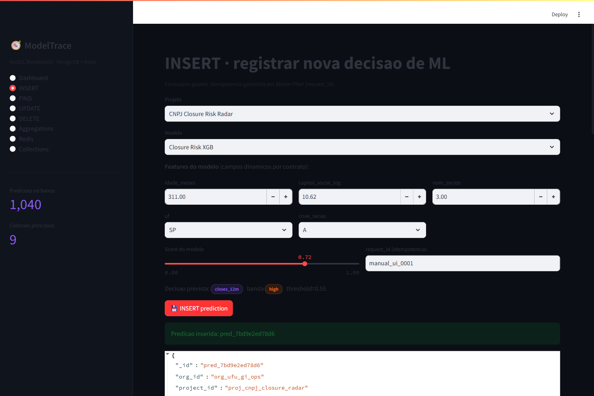
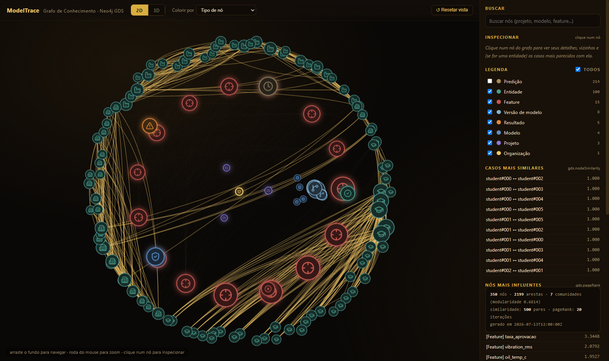
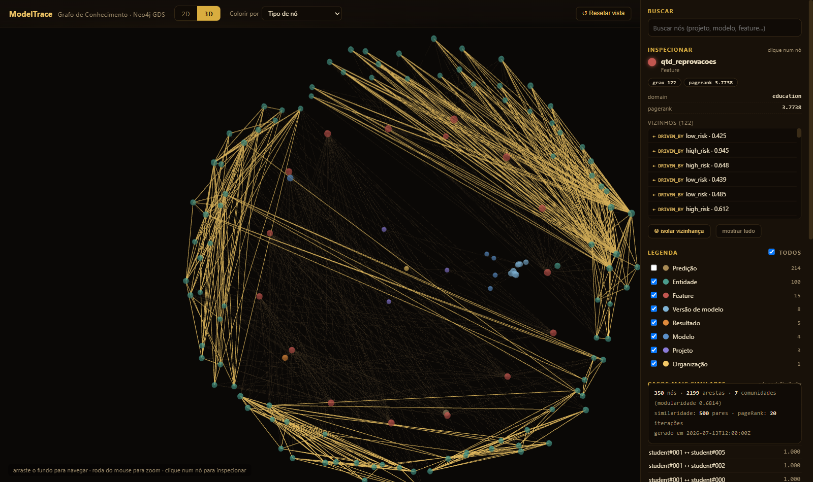
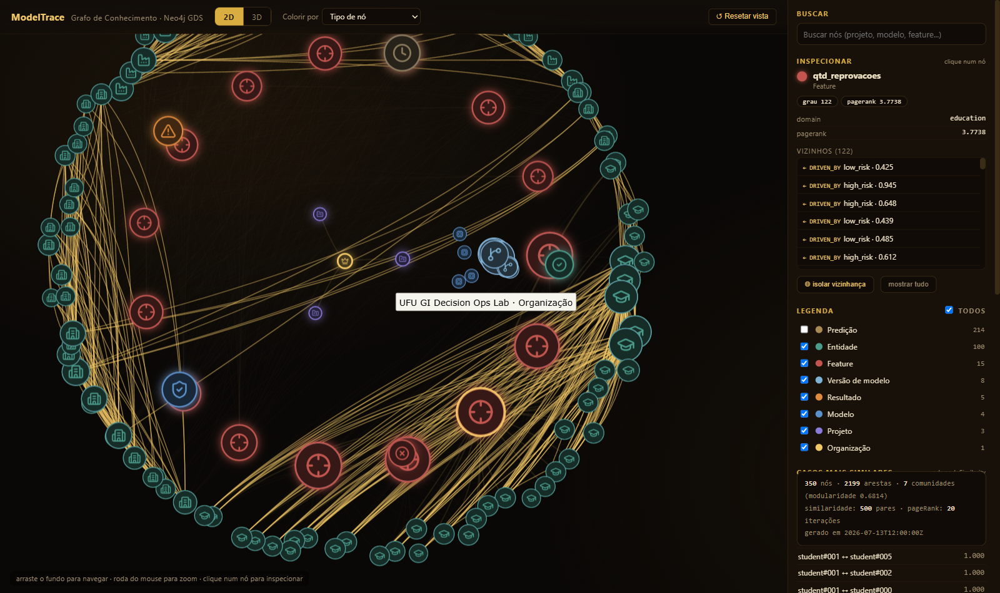
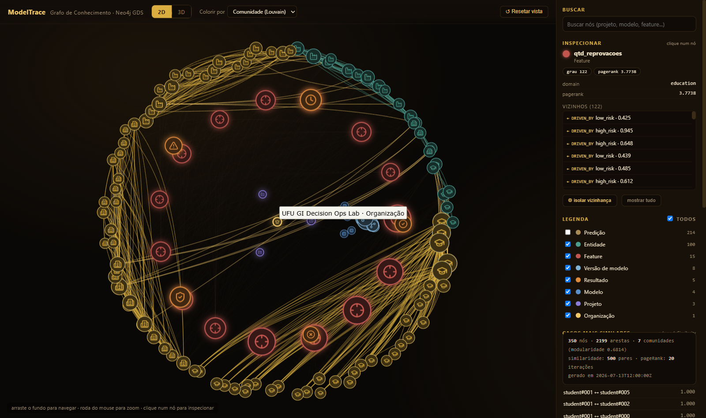

ModelTrace — Observabilidade & Governanca de ML sobre NoSQL
Apresentacao completa das 6 atividades da entrega: modelagem documental, CRUD, aggregation pipelines, Redis (comum + probabilistico) e um grafo de conhecimento com Neo4j Graph Data Science — cada slide com codigo real e resultado real.
Repo do produto: github.com/DiegoXavier-hub/ModelTrace · pipeline NoSQL em rec/pipeline/
01Tema do projeto & funcionalidade de maior valor
Documentado em README.md (raiz) e rec/pipeline/README.md.
Tema — ModelTrace
Plataforma de observabilidade, auditoria e governanca de decisoes de Machine Learning. Nao e presa a um problema so: registra decisoes de qualquer modelo, para qualquer entidade e qualquer dominio.
Hoje com 3 dominios fictícios simulados no mesmo banco: educacao (evasao de alunos), industrial (manutencao preditiva) e economico (risco de fechamento de empresas) — mesma modelagem documental, features diferentes.
Funcionalidade que mais entrega valor
Registrar cada decisao de ML como um documento unico e auditavel (colecao predictions) e permitir que o time operacional investigue, compare e aja sobre ela — sem exigir JSON ou SQL do usuario final.
- Protótipo Streamlit com INSERT/FIND/UPDATE/DELETE guiados (atividade 3).
- Ranking de modelos e drivers de risco via aggregation pipelines (atividade 4).
- Cache, contadores e deduplicacao em tempo real via Redis (atividade 5).
- Novo: "Radar de Casos Similares" via grafo + GDS — encontra casos parecidos e clusters de risco que a agregacao tabular nao enxerga (atividade 6).
02Hierarquia de colecoes & documento de exemplo
Referencia (1:N) entre colecoes de cadastro + agregacao/embedding dentro de predictions.
predictions — documento real (amostra do banco)
{
"_id": "pred_2e586b83ccce",
"project_id": "proj_tcc_student_outcomes",
"model_version": "v2",
"entity": {"id": "entity_30bd1f8a81a2", "type": "student"},
"features": {"nota_media": 64.48, "taxa_aprovacao": 0.633,
"qtd_reprovacoes": 5, "tipo_ingresso": "PROUNI"},
"prediction": {"label": "high_risk", "score": 0.6401,
"score_band": "high"},
"explanations": [
{"feature": "nota_media", "impact": 0.2256, "rank": 1},
{"feature": "tipo_ingresso", "impact": 0.2241, "rank": 2}
],
"decision": {"action": "human_review", "status": "triggered"},
"feedback": {"available": true, "classification_result": "tp"},
"flags": {"is_critical": false}
}
Um so documento substitui 6+ tabelas relacionais (entidade, features, predicao, explicacao, decisao, feedback) — cada modelo tem seu proprio conjunto de features, sem coluna nula nem schema por modelo.
Hierarquia (1:N + agregacao)
| Colecao | Relacao |
|---|---|
| organizations | tenant raiz |
| └ users | 1:N por org |
| └ projects | 1:N por org |
| └ models | 1:N por project |
| └ model_versions | 1:N por model |
| └ predictions | agrega tudo (embed) |
| └ entity_notes | 1:N por entidade |
| └ audit_events | append-only |
| └ metrics_snapshots | materializado ($merge) |
Diagrama completo: rec/modelagem-er-simplificada.png
03Protótipo Streamlit — funcionalidade mais importante
Gerir decisoes de ML com campos dinamicos por contrato do modelo — sem exigir JSON do usuario.



04CRUD — INSERT com idempotencia (Bloom Filter)
def insert_prediction(self, doc): req = doc["metadata"]["request_id"] # Bloom: ja processamos esse request? if self.r.execute_command( "BF.EXISTS", "mt:seen_requests", req): return {"status": "duplicate_skipped"} self.db.predictions.insert_one(doc) self.redis_ingest(doc) self.append_audit(doc["project_id"], "prediction.created", {...}) return {"status": "inserted"}
Log de saida (real)
1a insercao: {'status': 'inserted', 'prediction_id': 'pred_f47…'} 2a insercao (mesmo request_id): {'status': 'duplicate_skipped', 'request_id': 'manual_demo_0001'}
O Bloom Filter evita reprocessar a mesma decisao — O(1), ~138 KB para 100k requests.
05CRUD — FIND · UPDATE · DELETE
# FIND: filtro + projecao + sort + paginacao self.db.predictions.find(filter_, projection) \ .sort([("prediction.score", -1)]) \ .skip(skip).limit(limit) # UPDATE one: anexa feedback (sub-doc embutido) self.db.predictions.update_one( {"_id": pred_id}, {"$set": {"feedback.available": True, "feedback.classification_result": cls}}) # UPDATE many / DELETE many self.db.predictions.update_many(flt, {"$set": {...}}) self.db.predictions.delete_one({"_id": pred_id})

06Aggregation Pipeline 1 — Leaderboard de modelos
Funcionalidade: ranquear modelos por F1 a partir do feedback real. Resultado materializado com $merge.
[{"$match": {"feedback.available": True}},
{"$group": {"_id": {"model_id":"$model_id",
"version":"$model_version"},
"tp":{"$sum":{"$cond":[{"$eq":[
"$feedback.classification_result","tp"]},1,0]}} }},
{"$set": {"f1": /* 2PR/(P+R) */ }},
{"$lookup": {"from":"models","localField":"_id.model_id",
"foreignField":"_id","as":"model"}},
{"$unwind":"$model"}, {"$project": {...}},
{"$sort": {"f1": -1}},
{"$merge": {"into":"metrics_snapshots","on":"_id"}}]
Resultado real
| modelo | F1 | P | R | n |
|---|---|---|---|---|
| RandomForest v1 | .704 | .731 | .679 | 43 |
| XGBoost v2 | .620 | .635 | .606 | 130 |
| RandomForest v2 | .614 | .595 | .633 | 149 |
| DontGo v2 | .339 | .455 | .270 | 142 |
V1 lidera em F1, mas com n=43; v2 tem 3x mais feedback — trade-off amostra × metrica.
07Aggregation Pipeline 2 — Drivers de risco
Funcionalidade: quais features empurram a decisao para "risco alto" + amostra auditavel aleatoria.
[{"$match": {"project_id": pid,
"prediction.score_band":{"$in":["high","critical"]}}},
{"$facet": {
"drivers":[{"$unwind":"$explanations"},
{"$group":{"_id":"$explanations.feature",
"avg_impact":{"$avg":"$explanations.impact"}}},
{"$sort":{"avg_impact":-1}},{"$limit":5}],
"audit_sample":[{"$sample":{"size":3}},
{"$lookup":{"from":"entity_notes", ...}}],
"universe":[{"$count":"high_risk_total"}] }}]
Resultado real (educacao)
| feature | impacto medio | top driver |
|---|---|---|
| taxa_aprovacao | 0.157 | 44x |
| qtd_reprovacoes | 0.154 | 58x |
| delta_nota | 0.152 | 43x |
| nota_media | 0.151 | 70x |
Universo de risco alto: 280 docs
Ve media de impacto por feature — o grafo (ativ. 6) vai alem e relaciona quais entidades compartilham esses drivers.
08Redis — estruturas comuns
# Hash: contadores ao vivo por modelo r.hincrby("mt:counters:{model}", "predictions", 1) # Sorted Set: ranking de risco por projeto r.zadd("mt:risk:{proj}", {entity: score}, gt=True) # List: stream das ultimas predicoes r.lpush("mt:stream:{proj}", payload); r.ltrim(k,0,49) # String cache com TTL r.set("mt:cache:dashboard", json, ex=120) # Counter + EXPIRE: rate limit por API key n = r.incr(k); r.expire(k, 60) return n <= limit
Uso no sistema
| Estrutura | Recurso |
|---|---|
| String | cache do dashboard |
| Hash | KPIs por modelo |
| Sorted Set | top entidades de risco |
| List | feed de atividade |
| Counter | rate limit de API |
rate limit 5/60s → [T,T,T,T,T,F,F]
09Redis — estruturas probabilisticas
# HyperLogLog: entidades unicas (cardinalidade) r.pfadd("mt:hll:entities:{model}", entity_id) r.pfcount(k) # ~= 65 # Bloom Filter: idempotencia por request_id r.execute_command("BF.ADD", "mt:seen_requests", req) r.execute_command("BF.EXISTS","mt:seen_requests", req) # Count-Min Sketch: frequencia aprox. por entidade r.execute_command("CMS.INCRBY", "mt:entity_freq", e, 1) # Top-K: heavy hitters (entidades mais avaliadas) r.execute_command("TOPK.ADD", "mt:top_entities", e)
Por que probabilistico?
- HyperLogLog — milhoes de entidades unicas em ~12 KB.
- Bloom — dedup O(1) sem consultar o Mongo; casa com o request_id unique.
- Count-Min — frequencia aproximada com memoria fixa.
- Top-K — top entidades sem ordenar tudo.
Bloom: 1.041 itens · capacidade 100k · 138 KB
10Grafo de conhecimento — esquema & dataset
Última atividade: as entidades reais do banco viram nós (nao o codigo/projeto) — organizacao, projetos, modelos, versoes, entidades avaliadas, predicoes, features e outcomes.
(:Organization)-[:OWNS]->(:Project)
-[:HAS_MODEL]->(:Model)-[:HAS_VERSION]->(:ModelVersion)
-[:PRODUCED]->(:Prediction)-[:FOR_ENTITY]->(:Entity)
(:Prediction)-[:DRIVEN_BY {impact,rank}]->(:Feature)
(:Prediction)-[:CLASSIFIED_AS]->(:Outcome) # TP/FP/TN/FN/PENDING
# derivados por analytics, usados pelo GDS:
(:Entity)-[:RISK_FACTOR {weight}]->(:Feature)
(:Entity)-[:SIMILAR_TO {score}]->(:Entity) # gds.nodeSimilarity
Dataset fictício, mesmo tema dos 3 projetos (educacao/industrial/economico), gerado com o mesmo PROJECT_DEFS do crud_pipeline.py — independente do Mongo (so precisa do Neo4j de pe).
Grafo gerado (execucao real)
| Tipo de no | Qtd |
|---|---|
| Entity | 100 |
| Prediction | 214 |
| Feature | 15 |
| ModelVersion | 8 |
| Model | 4 |
| Outcome | 5 |
| Project | 3 |
| Organization | 1 |
350 nós · 2.199 arestas
11Grafo — 3 operacoes GDS, 1 funcionalidade
"Radar de Casos Similares": casos parecidos, cluster de risco e influencia estrutural — o complemento multi-hop do aggregation pipeline 2 (que so ve medias, nao relacoes entre entidades).
CALL gds.graph.project(
'ef',['Entity','Feature'],
'RISK_FACTOR')
CALL gds.nodeSimilarity.write(
'ef', {writeRelationshipType:
'SIMILAR_TO', topK:5})
Jaccard sobre features compartilhadas. 500 pares escritos.
CALL gds.graph.project('es',
'Entity',{SIMILAR_TO:
{orientation:'UNDIRECTED'}})
CALL gds.louvain.write('es',
{writeProperty:
'community_id'})
7 comunidades, modularidade 0.68 — redescobre os 3 dominios sozinho.
CALL gds.graph.project('full',
[...8 labels...], '*')
CALL gds.pageRank.write('full',
{writeProperty:
'pagerank'})
Top influencia: qtd_reprovacoes (3.77), tipo_ingresso (3.67).
12Grafo — visualizacao interativa 2D / 3D
graph_visualizacao.html — pagina autocontida, toggle 2D (vis-network) / 3D (3d-force-graph), layout radial tipo constelacao, icones por tipo de no, cor por comunidade (coloracao de grafos).


13Grafo — inspecao de no, comunidades & Streamlit
Painel de inspecao (estilo graphify, e mais): propriedades, grau, pagerank, comunidade, vizinhos clicaveis e — para entidades — os casos mais similares. Tambem embutido numa aba dentro do protótipo.



14Como rodar tudo & checklist da entrega
# 1) infra (Docker): Mongo + Redis Stack + Neo4j GDS docker compose -f rec/pipeline/docker-compose.pipeline.yml up -d # 2) pipeline de banco (cria, popula, CRUD, agg, redis) python rec/pipeline/crud_pipeline.py # 3) pipeline de grafo (Neo4j + 3 algoritmos GDS) python rec/pipeline/graph_pipeline.py # 4) prototipo de interface (com aba de grafo 2D/3D) streamlit run rec/pipeline/streamlit_app.py
Logs completos em rec/pipeline/logs/ (aggregation, GDS e o log de saida de cada pipeline).
Entregaveis — 6 atividades
- ✅ Tema & funcionalidade de maior valor (README)
- ✅ Hierarquia de colecoes + doc de exemplo por colecao
- ✅ Protótipo Streamlit + CRUD (INSERT/FIND/UPDATE/DELETE) + prints
- ✅ 2 aggregation pipelines (match, group, set, lookup, unwind, project, sort, merge, sample, facet, count)
- ✅ Redis: 5 estruturas comuns + 4 probabilisticas
- ✅ Grafo de conhecimento + 3 operacoes GDS (nodeSimilarity, louvain, pageRank) com visualizacao 2D/3D